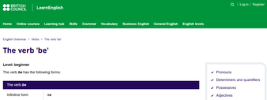

Datos
Nombres:
Learnenglish
Woodwardenglish
Area: Inglés
Grado: Noveno
Autores:
British council
Rob Woodward
Enlaces Repositorios
Enlaces RED
Aporte
En el proceso de enseñanza el RED aportará accesibilidad ya que se puede ver en cualquier tipo de dispositivo, la efectividad de la recepción de la temática y por supuesto que es atractivo para los estudiantes.
Caracteristicas
La interactividad, es decir que puedan comunicarse, navegar y llevar su ritmo. Que la temática sea clara y la estructura sea secuencial y concreta. Que la retroalimentación sea inmediata y que se pueda justificar la respuesta correcta. Y en definitiva que el acceso pueda ser en cualquier momento y desde cualquier lugar.
Limitaciones
- Está diseñado para estudiantes autónomos, lo que limita su utilidad en un entorno de aula donde se requiere más interacción y personalización.
- No siempre se adapta a necesidades específicas de los alumnos, como aquellos con dificultades de aprendizaje o necesidades especiales.
- Muchas actividades interactivas y cursos completos requieren suscripción de pago.
- Muchas actividades se centran en comprensión lectora y auditiva, dejando menos espacio para producción oral y escrita.
- Usa explicaciones detalladas y visuales estáticas, lo que puede ser menos atractivo para estudiantes que prefieren métodos interactivos o dinámicos.
- A diferencia de plataformas con reconocimiento de voz, no ofrece muchas oportunidades para practicar pronunciación o conversación en tiempo real.
- No ofrece rutas de aprendizaje adaptadas al progreso individual del estudiante.
- Sus ejercicios no suelen incluir retroalimentación instantánea con explicaciones detalladas.
Estandares
Creo que los estándares más efectivos para un aprendizaje significativo son donde se pueda preguntar, responder, que exista la posibilidad de dirigirse a otros enlaces, además que sean concisos y con temas bien definidos. Que se ajusten las preguntas a la dificultad requerida, además de que exista múltiple variedad de tipos de pregunta.
- 